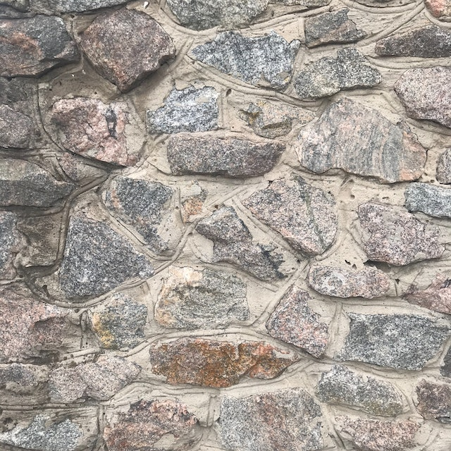
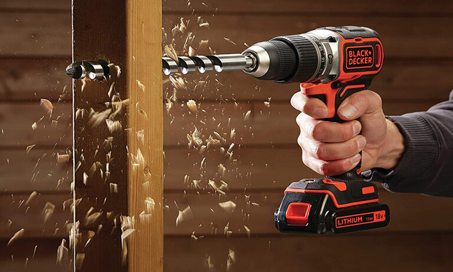
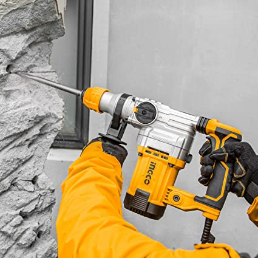

El taladro es una herramienta eléctrica muy versátil que se utiliza para hacer agujeros en una variedad de materiales, como madera, metal y paredes. Esta herramienta cuenta con una broca que gira a alta velocidad, lo que permite perforar fácilmente materiales duros y resistentes.

|
|
|  |
Hay varios tipos de taladros disponibles en el mercado, incluyendo taladros inalámbricos, taladros de percusión y taladros de impacto. Cada tipo de taladro está diseñado para satisfacer las necesidades específicas de una tarea determinada, y es importante elegir el tipo adecuado para el trabajo que se va a realizar.
|  | |
|  |
Las ventajas de usar un taladro son muchas. En primer lugar, el taladro permite realizar tareas de perforación de manera más eficiente y precisa que con herramientas manuales. Además, el taladro es más seguro y cómodo de usar, lo que lo hace ideal para tareas que requieren una gran cantidad de perforaciones repetitivas.
En esta página web, exploraremos en detalle el uso del taladro, incluyendo los diferentes tipos de taladros disponibles y sus aplicaciones específicas. También abordaremos las ventajas del uso de un taladro y brindaremos consejos y trucos para ayudar a los usuarios a aprovechar al máximo esta herramienta versátil.
Así que, si estás interesado en conocer más sobre el taladro y cómo puede mejorar tu trabajo, ¡sigue navegando por esta página web!